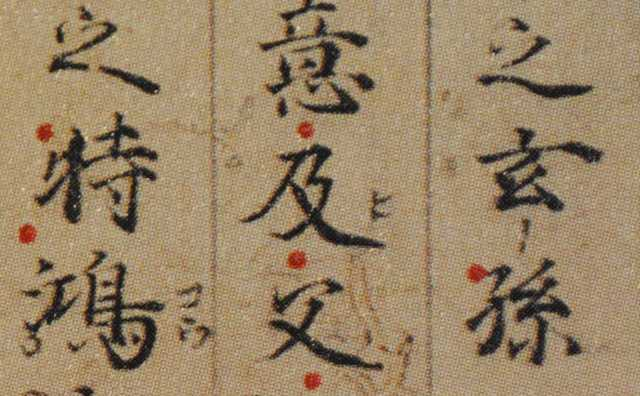
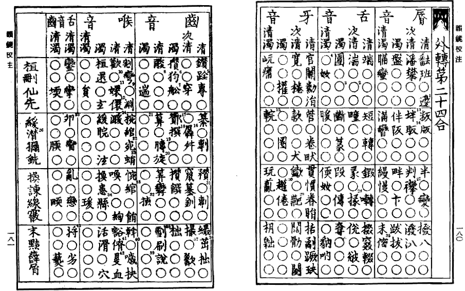

『完訳 論語』『漢文入門』
公開日：
『完訳 論語』

- 作者: 井波律子
- 出版社/メーカー: 岩波書店
- 発売日: 2016/06/09
- メディア: 単行本
- この商品を含むブログを見る
大阪で暇をしていた時に、ミナミの旭屋書店で買った。
注はほとんどなくて、句読点のみを施した白文、読み下し分、訳文、解説といった構成。全体的に解釈が柔らかめで、初めて『論語』に接する人にとっては親しみやすいかも。個人的には少し物足りなさを感じたのと、解釈に通底する“杓子定規ではない、人間味あふれる孔子”像が少し鼻についた。いろんな意味があるよっていうことを軽視しているわけではないけど、あくまでも著者の孔子像に基づいて訳されているので、わかりやすいが個人があれこれ解釈する余地はない。
ほとんど知ってるエピソードばかりだったけど（『論語』ってどのしょうも割と有名だよね）、まじめに通読したことはなかったので、その点ではよかったかも。
『漢文入門』
")
- 作者: 前野直彬
- 出版社/メーカー: 筑摩書房
- 発売日: 2016/03/11
- メディア: Kindle版
- この商品を含むブログを見る
『完訳 論語』を眺めていて、「漢文ってよくわかんねえな」と思ったので手に取ってみた（これは比喩表現で、Amazon の関連リンクに出てきたので買ってみただけ）。
この本は思いのほか面白かった。
まず、「漢文の読めない学生を読めるようにするためのものではない」というスタンスがいい（笑。「この本はただ「漢文」を読む人のための基礎として、訓読法の原則と、それが成立するまでの過程を述べるにすぎない」。ヲコト点ぐらいは教養として知っていたが、その先にも面白い世界がひろがっているんやな。

（ヲコト点。点を打つ場所によって、送り仮名がわかる）
漢文の訓読というのは当初、自分のためのメモとして生まれた（本文と区別するために、赤文字で入れることが多かったみたい）。カタカナも訓読の際に送り仮名をメモするために作られたらしい。当然、最初はどれも我流だったが、他人に教えるにあたり次第に整理されていき、さまざまな流派が発生したっぽい。かつて舶来の文化を学ぶということは、どこかの流派に所属して、その訓読方法を会得することだったので、秘術みたいになってることもあるみたいだね。
それが江戸時代になると漢文を学ぶ人たちが増え、その訓読方法も標準化されていく。そして、僕らが目にする今の訓読方法に収まったわけ。これがベストというわけではないけど、ケチをつける部分が少ない優れたやり方で感心する。句読点と訓読点、あと送り仮名ぐらいがあればなんとなく外国語が日本語として読めるんだぜ……何のマジックだよ。
そのほかにも、中国文（中国語として読むことをそう呼んでみた）と漢文の違い、漢語と和語の違い、漢文よくわからないマンの難関であろう“再読文字”なんかの解説も、改めて読むと面白かった。たとえば、重箱読みとか湯桶読みっていう言葉は聞くけど、これまでは「だからなに？」って感じだった。でも、漢語と和語、そしていわゆる漢文の“和臭”の話になると避けては通れないんだな。
漢字の音は原則一通りだけど、まれに複数あって、それによって意味が異なってくるというのも経験的には知っていたが、これも今まであまり気にしてなかった点だ。たとえば、“楽＜ラク＞”は“たのしい”っていう意味だけど、“楽＜ガク＞”は“演奏・音楽”っていう意味だし、“易＜イ＞”は“簡単である”という意味（例：安易、容易）だが、“易＜エキ＞”は“交換する”という意味（例：貿易）だ。
これだって「だから何だ」って感じだけど、たとえば三国志・曹操の息子・曹植の名前は何と読むべきだろう。たぶん“ソウショク”と読むのが一般的だが、“植＜ショク＞”は“植える”という意味になってしまう。一方、あまり知られていない“植＜チ＞”ならば、“建てる”という意味になる。これだと字（あざな：通称）の“子建”と意味が通じ、よりふさわしい。ちょっと“わかってる”感じも醸し出せるしな（ぁ
どっちにしろ、厳密な読み方としては間違っている（日本語にない中国音は訛って音写されるし、四声もない）のでどっちでもいいのだが（笑。漢音とか呉音とか、そういうのもあるしな。漢音と呉音を慣用的に混ぜて使ってる例（施工：セコウ）なんかも、言われてみるとおかしいなー、最初に言い出した人、あんまり漢字わかってないんだなー、でもそっちの方がしっくりくるよなーと思う。
あと、“馬＜ウマ＞”がほんとは【音読み】だったっていうのも面白いな。マジかよ。中国音では“ma”、もしくは強く濁って“ba”と発音されるが、これを“ンマ（書くときはムマ）”“バ”と写したのが次第に前者が“ウマ”となり、なんか訓読みっぽく扱われるようになった。こういう例には“梅＜ウメ、ムメ＞”などがあるという。ビックリだな。ってか、日本の漢字の読みがブロークンイングリッシュならぬブロークンチャイニーズであったことが改めて感じられる。日本人が「書けるけど（※しかも文法的には正しいが意味的には微妙な）、話せない」というのは二千年前から変わらないらしい。

あと、関係ないけど、中国の文章を中国文として読む取り組みはどうやってたんだろうな。今なら発音記号とかあるんだろうけど、むかしは韻図みたいなのを輸入して勉強したのかな。阿倍仲麻呂なんかはしゃべるほうもきっとペラペラだったんだろう。想像もつかないな！
漢文力はまったく上がらなかったが、漢文への興味は強まった――そんな一冊。